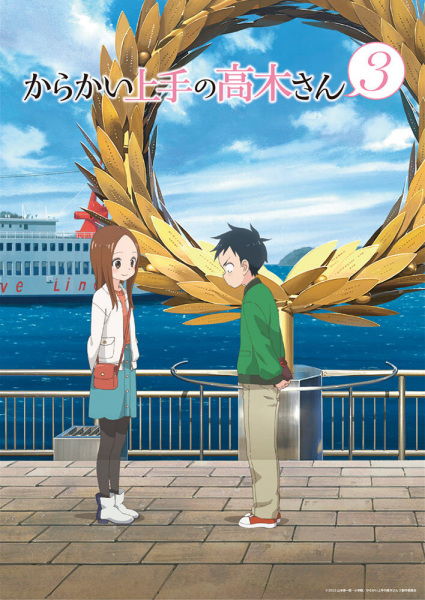

Animes mas vistos
El anime mas visto en el 2022
Kimetsu no Yaiba: Yuukaku-hen

Sinopsis
Estamos en la era Taisho de Japón. Tanjiro, un joven que se gana la vida vendiendo carbón, descubre un día que su familia ha sido asesinada por un demonio. Para empeorar las cosas, su hermana menor Nezuko, la única superviviente de la masacre, ha sufrido una transformación en demonio. Destrozado por los acontecimientos Tanjiro decide convertirse en un cazador de demonios para poder devolver a su hermana a la normalidad y matar al demonio que masacró a su familia.
Karakai Jouzu no Takagi-san 3
Sinopsis
El día a día de Nishikata no podría ser más tedioso, su compañera de pupitre en clase, Takagi, se las ingenia siempre para incordiar gastándole bromas a la mínima oportunidad. Al contrario de lo que uno podría llegar a pensar, eso no desanima a Nishikata, es más, está totalmente decidido a devolvérsela y lograr que un día ella se muera de la vergüenza. Sin embargo, la experiencia en el tema hace que Takagi siempre esté un paso por delante. Parece que a ella le encanta ver cómo se ruboriza y se desespera cuando cae en sus gracietas, ¿pero será ese el verdadero motivo?

Shingeki no Kyojin: The Final Season Part 2
Sinopsis
Muchos años atrás, la humanidad estuvo al borde de la extinción con la aparición de unas criaturas gigantes que devoraban a todas las personas. Huyendo, la humanidad consiguió sobrevivir en una ciudad fortificada de altas murallas que se ha convertido en el último reducto de la civilización contra los Titanes que campan a sus anchas por el mundo. Ahora esa paz está a punto de verse interrumpida por una cadena de acontecimientos que llevará a desvelar qué son los Titanes y cómo aparecieron.

Sono Bisque Doll wa Koi wo Suru
Sinopsis
Gojo Wakana es un estudiante de preparatoria que quiere convertirse en un maestro del tradicional arte de crear muñecas Hina. Aunque adora ese arte, no sabe nada de las últimas tendencias y eso hace que le cueste encajar con sus compañeros de clase. Los más populares de la clase, en especial una chica llamada Marin Kitagawa, parecen creer que él vive en un mundo aparte. Todo esto cambia por completo un día cuando Marin comparte un secreto inesperado con él y hace que sus dos mundos coincidan.